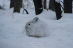
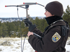

Project Overview
Snowshoe hares and Canada lynx in Yukon Territory
The snowshoe hare (Lepus americanus) is a keystone species in Canada’s boreal forest, where it plays a critical role in defining the structure and function of plant-herbivore and predator-prey population dynamics. In the Kluane region, Yukon Territory, snowshoe hares undergo dramatic population cycles roughly every 10 years, and these changes reverberate across trophic levels to affect population dynamics throughout the boreal food web. During cyclic peaks, hare populations are subject to extreme stress due to food shortage and elevated predation risk, including from Canada lynx (Lynx canadensis) and coyotes (Canis latrans) that can kill >70% of the hare population during a single year. Predators may also induce increased stress in hares, owing to perceived risk perception that could affect their reproduction, behaviour and productivity, and thereby potentially influence the cyclical nature of their populations. Yet, only recently have ecologists recognized the potential demographic significance of such non-consumptive effects of predators, and this complex area of research requires controlled manipulation of the hypothalamic-pituitary-adrenal (HPA) axis to derive robust inference about the processes underlying stress-related responses. Indeed, it is understood that stress associated with the physical presence of (and chase by) a predator can affect hares physiologically, but to date researchers have not successfully quantified the broader effects of such stress on hare behaviour and ultimately, their population dynamics.
With the help of ARTL, researchers are utilizing GIS applications such as telemetry and Iridium satellites to successfully track wildlife to further understand these complex trends in population cycles.
Iridium Satellites
Iridium satellites work when other solutions fail, and ARTL offers reliable and weather-resilient connections through small, lightweight products designed to withstand the uncertain conditions of the wild - such as intense snow conditions in the Yukon. Utilizing Iridium's global network, wildlife workers - from scientists and researchers to environmentalists and field workers - have reliable voice and data solutions to push their studies further. Iridium and ARTL collaborate with conservation organizations, research groups, and individuals to develop ground-breaking solutions for monitoring and protecting biodiversity. Iridium is the only satellite network that operates everywhere in the world, even vast, remote locations. With 66 low-earth-orbit satellites circling the earth, wildlife researchers are reliably and securely connected, with the ability to send data in real-time and stay safe while in the field. Many researchers in the Kluane region monitoring hares and their predators rely on Iridium satelites for vital data for their projects.
Wildlife Tracking
ARTL assisted in tracking individual snowshoe hares (Lepus americanus) at high and low elevation sites in the summer of 2016. Researchers wanted to get a better idea of their population size and the reliability of field methods in relation to index abundance. We were also interested in understanding the influence of snow depth and carnivore occurrence on snowshoe hare survival from predators such as Canada lynx (Lynx canadensis). Questions asked included: Would areas with deeper snow contribute to higher survival because of lower carnivore occurrence?
To test this hypothesis, the lab sampled 2 regions that differed in annual snow depth. ARTL assisted by using a couple field methods to evaluate this question. First, we set remote cameras at hare monitoring sites to monitor carnivore occurrence, evaluate mismatch of snowshoe hares, and record local snow depth. We also used radio telemetry to track hares and monitor survival on a weekly basis. In order to do the latter, though, we had to capture hares and fit them with radio-collars! Each hare is individually fitted with a collar, and we record demographic data (sex, age) and morphological measurements (weight, hind foot length) during this interaction before the hare is then released. The radio-collar contains a sensor that lets us know if the animal is dead or alive, and allows us to track the animal to its location. We have tracked radio-collared hares once/week throughout the year to evaluate factors that influence their survival. Also, recording their locations when they are alive allows us to estimate their movement patterns and how this is influenced by different habitats.
Radio Telemetry
ARTL has also assisted in projects by providing radiotelemetry devices and expertise for telemetry-based research. Snowshoe hare (Lepus americanus) mortality is monitored by radiotelemetry from February to August annually, during a population fluxes at Kluane Lake Research Station, Yukon Territory. Survival of juvenile hares from birth to 365 days among hares born in 2020 was 0.16; annual survival among adults was 0.58 from February 2020 through January 2021 and 0.33 from August 2021 through July 2022. Predators were responsible for 9 of 14 recorded deaths among juveniles. All adult mortality was predator caused. There was no evidence that predator-killed hares were weak or in poor physical condition relative to survivors. Transmitters had no detectable effect on over-winter weight loss of hares.